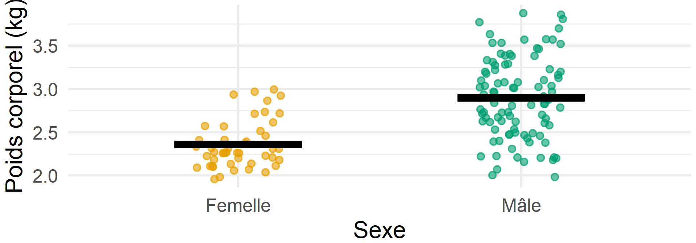
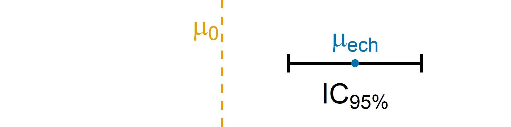
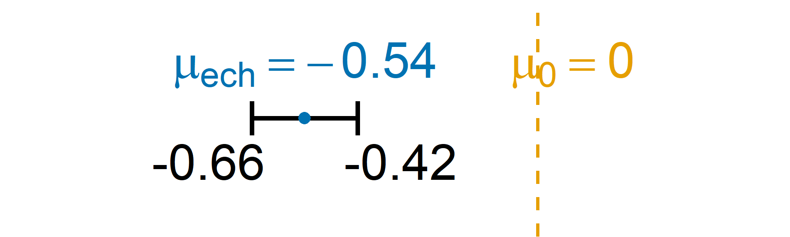
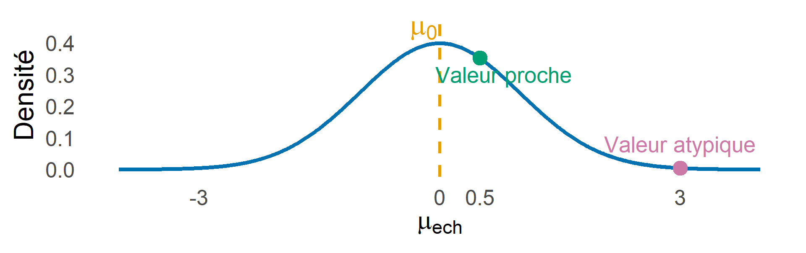
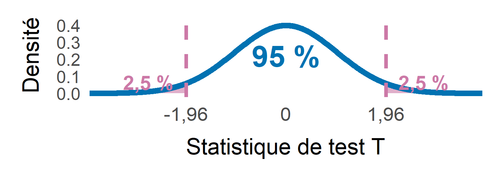
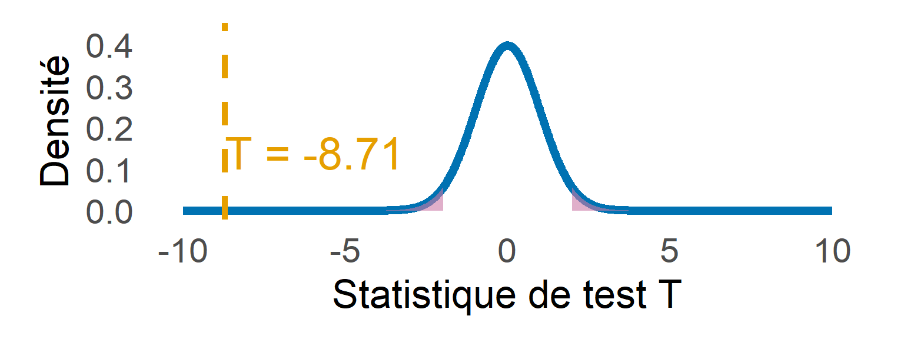
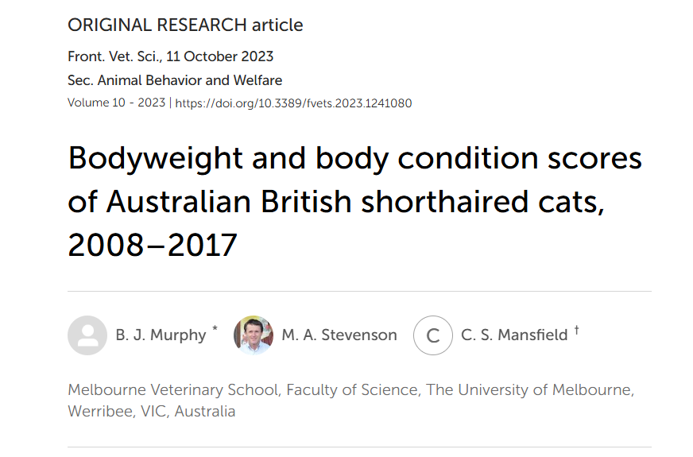

| Sex | Bwt | Hwt |
|---|---|---|
| F | 2.0 | 7.0 |
| F | 2.0 | 7.4 |
| F | 2.0 | 9.5 |
| F | 2.1 | 7.2 |
| F | 2.1 | 7.3 |
| F | 2.1 | 7.6 |
| F | 2.1 | 8.1 |
| F | 2.1 | 8.2 |
| F | 2.1 | 8.3 |
| F | 2.1 | 8.5 |
Un test d’hypothèse permet d’évaluer, à partir d’un échantillon, si les données apportent suffisamment d’éléments pour répondre par “oui” ou par “non” à une question sur la population.
Question de recherche |
Méthode utilisée |
| Le poids moyen des chats diffère-t-il selon leur sexe ? | Test de Student |
| La proportion de chiens présentant une maladie est-elle différente de 20 % ? | Test d’une proportion |
| La présence d’une maladie est-elle associée au statut vaccinal ? | Test \(\chi^2\) d’indépendance |
| Le type d’alimentation influence-t-il la durée de guérison de l’animal ? | ANOVA |
Warning
Il existe de nombreux tests d’hypothèse, dont le choix dépend de la question posée et de la nature des données.
Jeu de données utilisé : Mesures anatomiques chez \(144\) chats adultes, disponibles dans le package R MASS (Venables and Ripley 2002; Fisher 1947).
Sexe : Femelles (F), Mâles (M)
| Femelles | Males | |
|---|---|---|
| Nb. d’individus | 47 | 97 |
2 mesures morphologiques :
| Nom | Mesure | Unité |
|---|---|---|
| Bwt | Poids corporel | kg |
| Hwt | Poids du coeur | g |
| Sex | Bwt | Hwt |
|---|---|---|
| F | 2.0 | 7.0 |
| F | 2.0 | 7.4 |
| F | 2.0 | 9.5 |
| F | 2.1 | 7.2 |
| F | 2.1 | 7.3 |
| F | 2.1 | 7.6 |
| F | 2.1 | 8.1 |
| F | 2.1 | 8.2 |
| F | 2.1 | 8.3 |
| F | 2.1 | 8.5 |
Dans la suite, on va se concentrer uniquement sur le poids corporel (Bwt) de l’ensemble des chats.
Le poids corporel moyen des chats diffère-t-il entre les mâles et les femelles ?
Comment déterminer si les moyennes des groupes estimées sont suffisamment différentes pour dire que c’est significatif ?

Warning
Comparer uniquement les moyennes ne suffit pas : il faut également tenir compte de la variabilité des observations et de la taille des échantillons.
Notations : Soit \(X\) une variable aléatoire représentant une caractéristique quantitative d’intérêt dans une population et \(X_1,\ldots,X_n\) l’échantillon associé. On pose :
Hypothèses (test bilatéral) :
\[ \underbrace{H_0:\mu_{\mathrm{pop}}=\mu_0}_{\substack{\text{Hypothèse nulle}\\ \text{Hypothèse de référence à tester}}} \qquad\qquad \underbrace{H_1:\mu_{\mathrm{pop}}\neq\mu_0}_{\substack{\text{Hypothèse alternative}\\ \text{Opposée à }H_0}} \]
Un test d’hypothèse conduit à deux décisions possibles : rejeter \(H_0\) ou ne pas rejeter \(H_0\).
Notations :
\(X_{F,1},\ldots,X_{F,n_F}\) : Poids corporels des \(n_F=47\) femelles de l’échantillon.
\(X_{M,1},\ldots,X_{M,n_M}\) : Poids corporels des \(n_M=97\) mâles de l’échantillon.
\(\mu_F\) et \(\mu_M\) : Poids corporels moyens inconnus des populations.
Hypothèses (test bilatéral) : \[ \boxed{ \underbrace{H_0:\mu = \mu_F-\mu_M=0}_{\substack{\text{Hypothèse nulle}\\ \text{Hypothèse de référence à tester}}} \qquad\qquad \underbrace{H_1:\mu = \mu_F-\mu_M\neq 0}_{\substack{\text{Hypothèse alternative}}} } \]
Rappel des hypothèses (test bilatéral) : \(\ H_0:\mu_{\mathrm{pop}}=\mu_0 \qquad H_1:\mu_{\mathrm{pop}}\neq\mu_0\)
Objectif : Construire un intervalle de confiance pour \(\mu_{\mathrm{pop}}\) et vérifier s’il contient la valeur \(\mu_0\).
\[ IC_{95\%}(\mu_\mathrm{pop}) = \left[ \mu_{\mathrm{éch}}-1.96\frac{\sigma_{\mathrm{pop}}}{\sqrt{n}} \ ;\ \mu_{\mathrm{éch}}+1.96\frac{\sigma_{\mathrm{pop}}}{\sqrt{n}} \right] \]
Cas 1 : \(\ \mu_0 \in IC_{95\%}(\mu_{\mathrm{pop}})\) et \(n\) grand
Cas 2 : \(\ \mu_0 \notin IC_{95\%}(\mu_{\mathrm{pop}})\) et \(n\) grand

Quelle décision prendre concernant \(H_0\) selon que \(\mu_0\) appartient ou non à l’intervalle de confiance ?
Rappel des hypothèses (test bilatéral) : \(\ H_0:\mu_{\mathrm{pop}}=\mu_0 \qquad H_1:\mu_{\mathrm{pop}}\neq\mu_0\)
Règle de décision (risque \(\alpha=5\%\)) : \(\ \begin{cases}\mu_0 \in IC_{95\%}(\mu_{\mathrm{pop}})&\Longrightarrow \text{Non-rejet de }H_0 \\[6pt]\mu_0 \notin IC_{95\%}(\mu_{\mathrm{pop}})&\Longrightarrow \text{Rejet de }H_0\end{cases}\)
Cas 1 : \(\ \mu_0 \in IC_{95\%}(\mu_{\mathrm{pop}})\) et \(n\) grand
\(\Longrightarrow\) Non-rejet de \(H_0\)
Cas 2 : \(\ \mu_0 \notin IC_{95\%}(\mu_{\mathrm{pop}})\) et \(n\) grand
\(\Longrightarrow\) Rejet de \(H_0\)
Warning
Attention à la taille de l’échantillon\(n\) : Si \(n\) est trop petit, l’IC peut être trop large pour conclure.
Rappel des hypothèses : \(\ H_0:\mu = \mu_F-\mu_M=0 \qquad H_1: \mu = \mu_F-\mu_M\neq 0\)
Construction de l’IC à 95 % :
\[ IC_{95\%}(\mu) = \left[ (\underbrace{\mu_{\mathrm{éch},F}-\mu_{\mathrm{éch},M}}_{\mu_{\mathrm{ech}}}) \pm 1.96\sqrt{ \frac{\sigma_F^2}{\color{#E69F00}{47}}+ \frac{\sigma_M^2}{\color{#E69F00}{97}} } \right] \]
Règle de décision (risque \(\alpha=5\%\)) : \(\begin{cases}0\in IC_{95\%}(\mu)&\Longrightarrow \text{Non-rejet de }H_0\\[6pt]0\notin IC_{95\%}(\mu)&\Longrightarrow \text{Rejet de }H_0\end{cases}\)

\(\Longrightarrow\) Rejet de \(H_0\)
Les poids des mâles et des femelles sont \(\ne\).
Rappel des hypothèses (test bilatéral) : \(H_0:\mu_{\mathrm{pop}}=\mu_0 \qquad H_1:\mu_{\mathrm{pop}}\neq\mu_0\)
Objectif : Déterminer quelles valeurs de \(\mu_{\mathrm{éch}}\) sont atypiques lorsque \(H_0\) est supposée vraie.

À partir de quand l’écart entre \(\mu_\mathrm{éch}\) et \(\mu_0\) est-il suffisamment important pour rejeter \(H_0\) ?
On considère un échantillon \(X_1,\ldots,X_n\) de v.a. indépendantes et de même loi, avec \(n\) grand.
Une statistique de test est une v.a., qui dépend de l’échantillon. Elle est utilisée pour construire une règle de décision sur \(H_0\). Pour un test bilatéral, on utilise la statistique de test suivante :
\[ T=\frac{\mu_{\mathrm{éch}}-\mu_0} {\sigma_{\mathrm{pop}}/\sqrt{n}}, \] où \(\sigma_{\mathrm{pop}}/\sqrt{n}\) est l’écart-type de la moyenne d’échantillon.
Application du théorème central limite : Sous \(H_0\), \(T \sim \mathcal{N}(0, 1)\).
Si \(\ T \approx 0\), \(\mu_{\mathrm{éch}}\) est proche de \(\mu_0\) et si \(\ |T|\) est grand, \(\mu_{\mathrm{éch}}\) est une observation atypique.
Explication : Un test d’hypothèse repose sur une décision prise à partir d’un échantillon, il peut donc être erroné.
Objectif : Contrôler les erreurs.
| Ne pas rejeter \(\small H_0\) | Rejeter \(\small H_0\) | |
|---|---|---|
| \(\small H_0\) vraie | ✅ Bonne décision | ❌ Type I : \(\small \alpha\) |
| \(\small H_0\) fausse | ❌ Type II : \(\small \beta\) | ✅ Bonne décision |
On distingue deux risques :
Note
En pratique, on fixe généralement le risque de première espèce \(\alpha=5\,\%\) ou \(\alpha=1\,\%\) avant de réaliser le test.
Sous \(H_0\), \(T \sim \mathcal{N}(0, 1)\), donc \(\mathbb{P}(-1.96\leq T\leq1.96)=0.95\).
Règle de décision (risque \(\alpha=5\%\)) :
\[ \begin{cases} |T_{\mathrm{obs}}|\leq1.96 &\Longrightarrow \text{Non-rejet de }H_0 \\[6pt] |T_{\mathrm{obs}}|>1.96 &\Longrightarrow \text{Rejet de }H_0 \end{cases} \]

Warning
Ne pas rejeter \(H_0\) ne signifie pas que \(H_0\) est vraie.
La p-valeur est la probabilité, sous \(H_0\), d’obtenir une statistique de test au moins aussi extrême que celle observée. C’est le plus petit risque pour lequel on rejetterait \(H_0\).
\[ p=\mathbb{P}_{H_0}\left(|T|\geq|T_{\mathrm{obs}}|\right) \]
Règle de décision (risque \(\alpha=5\%\)) :
\[ \boxed{ \begin{cases} p<0.05 &\Longrightarrow \text{Rejet de }H_0\\[6pt] p\geq0.05 &\Longrightarrow \text{Non-rejet de }H_0 \end{cases} } \]
Warning
La p-valeur n’est pas la probabilité que \(H_0\) soit vraie.
Rappel des hypothèses : \(\ H_0:\mu=\mu_F-\mu_M=0 \qquad H_1:\mu=\mu_F-\mu_M\neq0\)
Calcul de la statistique de test :
\[ T_{\mathrm{obs}}= \frac{ \mu_{\mathrm{éch} }}{ \sqrt{ \frac{s_F^2}{\color{#E69F00}{47}}+ \frac{s_M^2}{\color{#E69F00}{97}} } } \]
Règle de décision (risque \(\alpha=5\%\)) :
\[ \begin{cases} p\geq0.05 &\Longrightarrow \text{Non-rejet de }H_0\\[6pt] p<0.05 &\Longrightarrow \text{Rejet de }H_0 \end{cases} \]

\(T_{\mathrm{obs}}=-8.71\) et \(p=8.83e-15\).
\(\Longrightarrow\) Rejet de \(H_0\)
Le poids moyen diffère significativement entre mâles et femelles.
| Méthode basée sur les IC | Méthode basée sur les obs. atypiques | |
|---|---|---|
| Principe | Construire un IC pour \(\mu_{\mathrm{pop}}\) | Mesurer l’écart entre \(\mu_{\mathrm{éch}}\) et \(\mu_0\) |
| Outil | Intervalle de confiance | Statistique de test |
| Décision directe | Rejeter \(H_0\) si \(\mu_0\) n’appartient pas à l’IC | Rejeter \(H_0\) si la statistique observée appartient à la région de rejet |
| Décision avec p-valeur | — | Rejeter \(H_0\) si \(p<\alpha\) |
À retenir : Pour le test bilatéral considéré, avec un risque \(\alpha=5\%\), les deux approches conduisent à la même décision :
\[ \boxed{ \mu_0\notin IC_{95\%}(\mu_{\mathrm{pop}}) \quad\Longleftrightarrow\quad |T_{\mathrm{obs}}|>1.96 \quad\Longleftrightarrow\quad p<0.05 } \]
Note
En pratique, on utilise la méthode basée sur les observations atypiques et on décide avec la p-valeur.
| Test | Objectif | Nature des variables | Taille de l’échantillon | Hypothèses statistiques |
|---|---|---|---|---|
| Test Z | Comparer une moyenne à une valeur de référence | 1 variable quantitative | Tout \(n\) si normalité et variance connue | \(H_0:\mu=\mu_0\) ; \(H_1:\mu\neq\mu_0\) |
| Student (1 échantillon) | Comparer une moyenne à une valeur de référence | 1 variable quantitative | \(n\geq2\) ; normalité requise pour un petit \(n\) | \(H_0:\mu=\mu_0\) ; \(H_1:\mu\neq\mu_0\) |
| Student (2 échantillons) | Comparer deux moyennes | 1 variable quantitative + 1 qualitative (2 groupes) | \(n_1,n_2\geq2\) | \(H_0:\mu_1=\mu_2\) ; \(H_1:\mu_1\neq\mu_2\) |
| Welch | Comparer deux moyennes (variances possiblement différentes) | 1 variable quantitative + 1 qualitative (2 groupes) | \(n_1,n_2\geq2\) | \(H_0:\mu_1=\mu_2\) ; \(H_1:\mu_1\neq\mu_2\) |
| Student apparié | Comparer deux mesures sur les mêmes individus | 2 mesures quantitatives appariées | \(n\geq2\) paires | \(H_0:\mu_D=0\) ; \(H_1:\mu_D\neq0\) |
| ANOVA à 1 facteur | Comparer plusieurs moyennes | 1 quantitative + 1 qualitative (\(k\geq3\) groupes) | Effectifs suffisants dans chaque groupe | \(H_0:\mu_1=\cdots=\mu_k\) ; \(H_1:\) au moins une moyenne diffère |
| Shapiro-Wilk | Tester la normalité d’une distribution | 1 variable quantitative | \(3\leq n\leq5000\) sous R | \(H_0:\) normalité ; \(H_1:\) non-normalité |
Conditions d’application : Indépendance et normalité des observations (ou des différences appariées). Égalité des variances pour le Student à deux échantillons et l’ANOVA classique.
Important
Dans ce cours, on utilise beaucoup la formulation “pour \(n\) grand”, mais en pratique à partir de quelle taille \(n\) est-il vraiment grand ?
⁉️ Il n’y a pas de réponse universelle à cette question, tout dépend du problème ⁉️
| Valeur de \(n\) | Suffisant ou non ? |
|---|---|
| 10 | ❌ |
| 20 | ❌ |
| 30 | ça peut aller |
| 45 | ça peut aller |
| 50 | ✅ |
| 100 et + | ✅ |
Tip
Dans tous les cas, on attend une vision critique du nombre d’observations disponibles.
To Do :
Question : Le poids corporel moyen des chats diffère-t-il entre les mâles et les femelles ?
Hypothèse nulle \(H_0\) :
Le poids corporel moyen est identique chez les chats mâles et femelles.
\[ \boxed{H_0:\mu_F-\mu_M=0} \]
Hypothèse alternative \(H_1\) :
Le poids corporel moyen diffère entre les chats mâles et femelles.
\[ \boxed{H_1:\mu_F-\mu_M\neq0} \]
Note
On réalise un test bilatéral, car on cherche une différence sans présumer de son sens. La taille des échantillons influence la précision des estimations et la capacité du test à détecter une différence.
Important
Avec \(n_F=47\) femelles et \(n_M=97\) mâles, les effectifs permettent d’envisager un test de comparaison des moyennes.
Choix du test : On utilise le test t de Welch pour comparer les poids moyens de deux groupes indépendants, sans supposer l’égalité des variances.
Statistique de test :
\[ T_{\mathrm{obs}} = \frac{ \mu_{\mathrm{éch},F}-\mu_{\mathrm{éch},M} }{ \sqrt{ \frac{s_F^2}{47}+\frac{s_M^2}{97} } } \]
\[T_{\mathrm{obs}} = -8.709\]
\[\nu \approx 136.84\]
Règle de décision (risque \(\alpha=5\%\)) : \(\begin{cases}p < 0.05 &\Longrightarrow \text{Rejet de }H_0\\[6pt]p \geq 0.05 &\Longrightarrow \text{Non-rejet de }H_0\end{cases}\)
Résultats :
\[p <0.001\]
\(\Longrightarrow\) Rejet de \(H_0\)
La différence entre les poids moyens des mâles et des femelles est statistiquement significative au seuil de 5 %.
Question de recherche : Le poids corporel moyen des chats diffère-t-il entre les mâles et les femelles ?
Résultats et interprétation :
Poids moyen des femelles : 2.36 kg
Poids moyen des mâles : 2.9 kg
Au seuil de 5 %, on rejette \(H_0\). Les poids moyens des mâles et des femelles diffèrent significativement.
Dans cet échantillon, les mâles sont en moyenne plus lourds que les femelles.
Utilisations principales :
Comparer une moyenne à une valeur de référence - Le poids moyen des chats est-il différent de 4 kg ?
\(\longrightarrow\) Réalisation d’un test sur une moyenne.
Comparer les moyennes de deux groupes - Le poids moyen des chats diffère-t-il entre les mâles et les femelles ?
\(\longrightarrow\) Réalisation d’un test de Student ou de Welch.
Comparer les moyennes de plusieurs groupes - Le poids moyen diffère-t-il selon la race des chats ?
\(\longrightarrow\) Réalisation d’une ANOVA.
Exemple issu de : Murphy et al. (2023)

Note
Dans cet article, les ateur.es utilisent un t-Test pour mettre en évidence une différence significative entre les poids moyens des chats mâles et femelles (\(p<0{,}01\)).
Les étapes d’un test d’hypothèse :
Règle de décision : \(p<\alpha\) \(\Rightarrow\) Rejet de \(H_0\) ; sinon, Non-rejet de \(H_0\).
📌 Programme du prochain cours : Catalogue de test & ANOVA à 1 facteur.